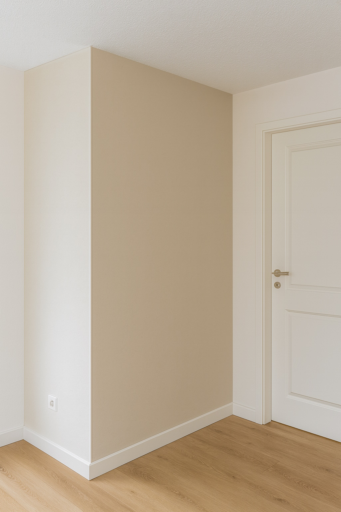
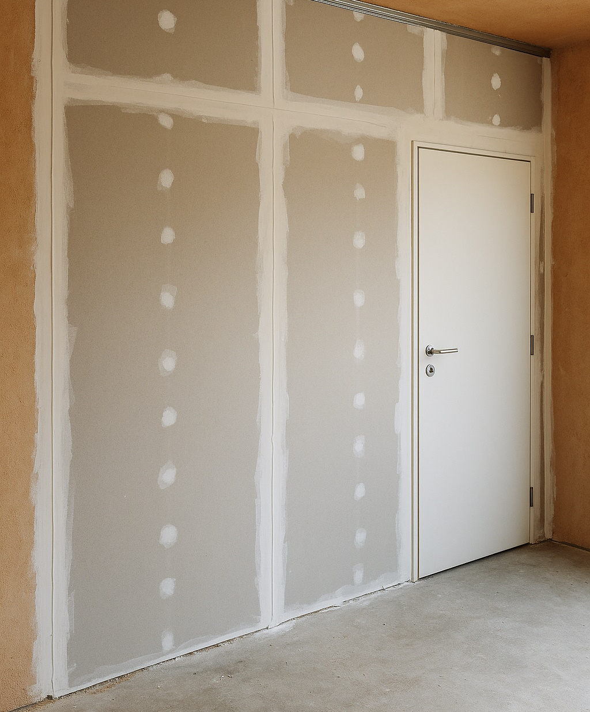

Trockenbauwand oder gemauerte Wand? Wann sich Leichtbau in der Wohnung lohnt
Zusätzliche Zimmer, ein kleines Homeoffice oder eine Trennung zwischen Wohnen und Arbeiten – oft braucht man in einer Wohnung oder einem Einfamilienhaus neue Wände. Dann stellt sich die Frage: Trockenbauwand oder gemauerte Wand? In diesem Beitrag geht es nicht um Theorie, sondern um praktische Unterschiede aus Sicht der Ausführung und Nutzung.
1. Was ist eine Trockenbauwand überhaupt?
Unter Trockenbau versteht man leichte, nichttragende Wände, die aus einem Rahmen (meist Metallprofile) und Beplankung bestehen – zum Beispiel aus Gipskartonplatten. „Trocken“ heisst, dass keine nassen Baustoffe wie Mörtel oder Putz in grösseren Mengen eingesetzt werden.
Der grundlegende Aufbau sieht meist so aus:
- Rahmen aus UW-/CW-Metallprofilen, am Boden, an der Decke und an bestehenden Wänden befestigt
- Beplankung ein- oder zweilagig mit Gipskartonplatten
- optional Dämmung im Hohlraum (Schallschutz, Technikführung)
- Fugen werden gespachtelt und geschliffen, danach kann gestrichen oder tapeziert werden
2. Wo hat die gemauerte Wand weiterhin Vorteile?
Eine gemauerte Wand (Backstein, Kalksandstein, Beton) bleibt dort sinnvoll, wo:
- Lasten aus dem Gebäude abgetragen werden müssen (tragende Wände)
- sehr hohe Masse und Schallschutz gefordert sind (z. B. zwischen Wohnungen)
- hohe Punktlasten dauerhaft eingeleitet werden (schwere Regale, Technik)
Diese Wände sind schwer, träge und sehr robust. Für reine Grundrissänderungen innerhalb einer bestehenden Wohnung sind sie allerdings aufwendig: Mauerwerk entsteht langsam, macht viel Staub und Feuchtigkeit und braucht oft mehr Eingriffe in Statik und Estrich.
3. Typische Situationen, in denen Trockenbau sinnvoll ist
Aus der Praxis gibt es viele Fälle, in denen eine Trockenbauwand für Eigentümer und Mieter die bessere Lösung ist:
- Zusätzlicher Raum im Dachgeschoss oder Keller: Ein grosser Raum wird in zwei kleinere unterteilt, z. B. Gästezimmer und Büro.
- Homeoffice-Ecke abtrennen: Statt mitten im Wohnzimmer zu arbeiten, schafft eine Leichtbauwand eine ruhige Zone mit Tür.
- Nische oder Abstellraum: Freie Ecken können mit Trockenbau schnell zu praktischen Stauräumen werden.
Der grösste Vorteil: Der Eingriff bleibt in vielen Fällen reversibel. Wenn eine Wohnung später wieder „offen“ verkauft werden soll, lassen sich Trockenbauwände vergleichsweise schnell und sauber zurückbauen.
4. Vorteile von Trockenbau aus Kundensicht
Wenn man Trockenbau und Mauerwerk vergleicht, fallen im Innenausbau besonders diese Punkte ins Gewicht:
- Geschwindigkeit: Eine Trockenbauwand entsteht in der Regel deutlich schneller als eine gemauerte Wand mit Putz.
- Weniger Feuchtigkeit im Gebäude: Besonders wichtig bei bewohnten Objekten – es muss nichts lange austrocknen.
- Leichtes Einbauen von Installationen: Leitungen, Dosen und Technik verschwinden einfach im Wandhohlraum.
- Flexibilität: Öffnungen für Türen, Nischen und Einbauten lassen sich gut planen und später teilweise noch anpassen.
Gleichzeitig gilt: Trockenbau ist kein „Billigsystem“, sondern ein eigenständiger, normierter Innenausbau. Entscheidend ist eine saubere Ausführung mit passenden Profilen, Schrauben, Platten und Spachtel.
5. Grenzen von Trockenbau – wo man genauer hinsehen muss
Auch Leichtbauwände haben Grenzen. Einige Punkte, auf die wir in der Praxis immer achten:
- Schwere Lasten: Küchenschränke, Hängeschränke oder grosse Regale brauchen entweder Verstärkungen in der Wand (Holzeinlagen, spezielle Platten) oder eine massive Wand.
- Feuchträume: In Bädern und Nassräumen müssen geeignete Platten, Abdichtungen und Details verwendet werden (z. B. spezielle Feuchtraumplatten).
- Schallschutz: Eine Einfachwand mit nur einer Plattenlage je Seite ist für ruhige Schlafzimmer neben lauten Räumen oft zu wenig – hier planen wir entsprechend stärkere Aufbauten.
Entscheidend ist also nicht nur „Trockenbau oder Mauerwerk“, sondern der konkrete Aufbau: Profilabstand, Anzahl Plattenlagen, Art der Dämmung, Anschlüsse an Decke und Boden.
6. Fazit: Wann lohnt sich welche Lösung?
Für reine Grundrissänderungen im Innenbereich – zusätzliche Zimmer, Abtrennungen, Homeoffice – ist Trockenbau in vielen Fällen die wirtschaftlichste und sauberste Lösung. Er ist schnell, flexibel und kann gut an spätere Wünsche angepasst werden.
Wo tragende Funktionen, sehr hohe Lasten oder extreme Schallschutz- Anforderungen bestehen, bleibt die gemauerte Wand wichtig. Hier sollten Statik und Bauphysik sorgfältig geprüft werden.
Im Idealfall kombiniert man beides: Tragende Strukturen massiv, flexible Raumaufteilungen in Trockenbau – so bleibt ein Gebäude technisch stabil und gleichzeitig anpassbar.